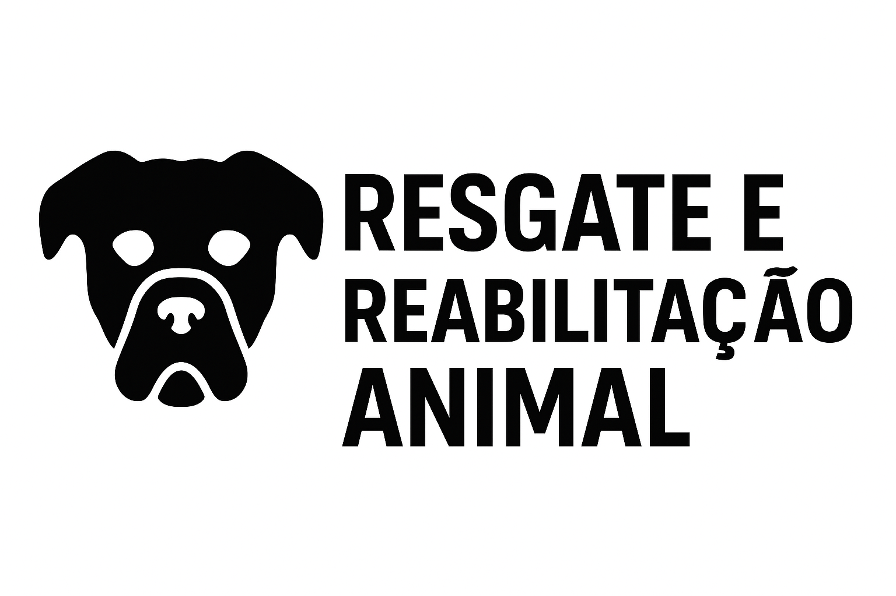

Resgate e Reabilitação
Realizamos o resgate de animais em situação de abandono ou maus-tratos, oferecendo abrigo, alimentação e tratamento veterinário.
Conheça as ações que fazem a diferença.
Realizamos o resgate de animais em situação de abandono ou maus-tratos, oferecendo abrigo, alimentação e tratamento veterinário.
Promovemos eventos mensais para encontrar lares cheios de amor para nossos resgatados. Todos os animais são vacinados e castrados.
Junte-se ao nosso time! Seja voluntário em resgates, eventos e campanhas de arrecadação. O amor que você dá volta em dobro.